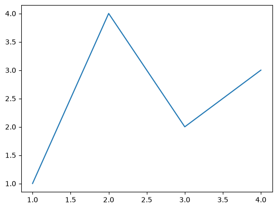
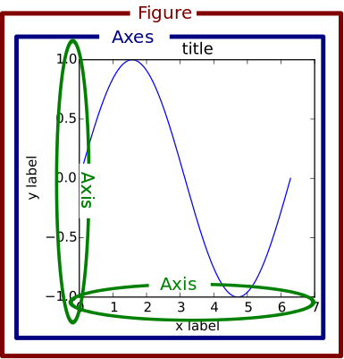
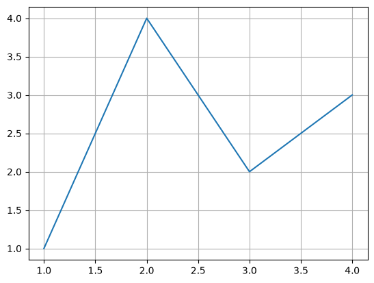
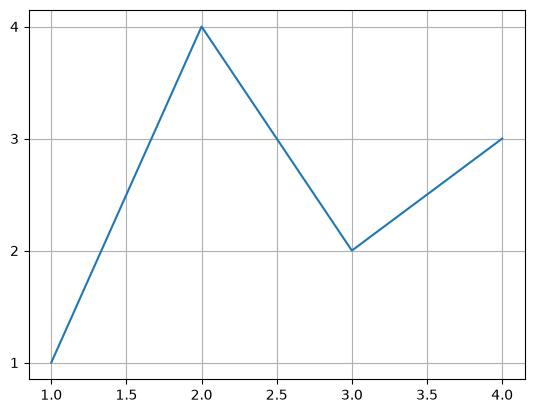
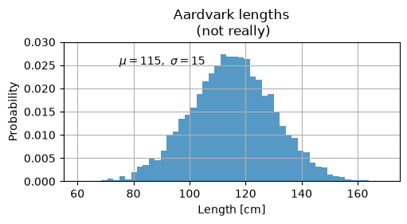
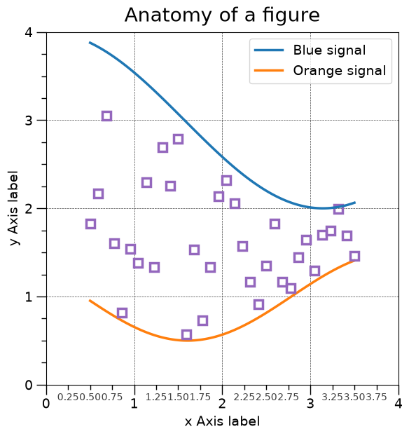
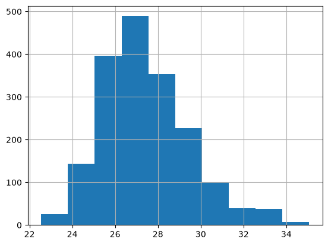
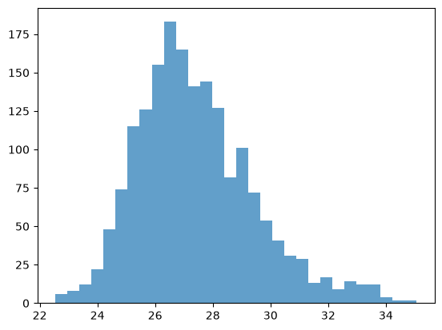
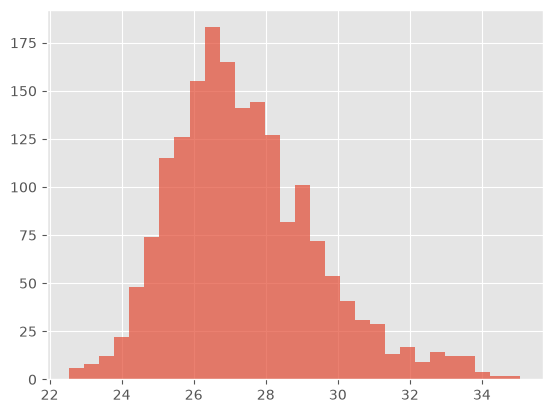
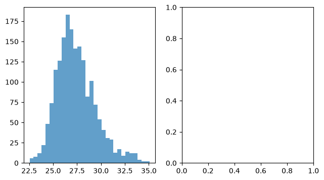

Matplotlib#
A comprehensive library for creating static, animated, and interactive visualizations in Python.
Built on NumPy arrays and designed to work with the broader SciPy stack.
Inspiration for plots and overviews
import matplotlib as mpl
import matplotlib.pyplot as plt
import numpy as np
import pandas as pd
mpl.rcParams["pdf.fonttype"] = 42
mpl.rcParams["ps.fonttype"] = 42
Basic Line Plot#
From Getting Started.
fig, ax = plt.subplots() # Create a figure containing a single Axes.
ax.plot([1, 2, 3, 4], [1, 4, 2, 3]) # Plot some data on the Axes.
plt.show() # Show the figure.



fig, ax = plt.subplots() # Create a figure containing a single Axes.
ax.plot([1, 2, 3, 4], [1, 4, 2, 3]) # Plot some data on the Axes.
ax.grid()
plt.show()

Customize ticks
ax.yaxis.set_major_locator(mpl.ticker.MaxNLocator(integer=True))
# ax.xaxis.set_major_locator(mpl.ticker.MaxNLocator(integer=True))
ax.get_figure()

mu, sigma = 115, 15
x = mu + sigma * np.random.randn(10000)
fig, ax = plt.subplots(figsize=(5, 2.7), layout="constrained")
# the histogram of the data
n, bins, patches = ax.hist(
x,
50,
density=True,
facecolor="C0", # first color in color palette
alpha=0.75,
)
ax.set_xlabel("Length [cm]")
ax.set_ylabel("Probability")
ax.set_title("Aardvark lengths\n (not really)")
ax.text(75, 0.025, r"$\mu=115,\ \sigma=15$")
ax.axis([55, 175, 0, 0.03])
ax.grid(True)

Anatomy of a matplotlib figure#
Exercise: Comment out parts of the code above and see what happens to the plot.
First we load the data (Source).
np.random.seed(19680801)
X = np.linspace(0.5, 3.5, 100)
Y1 = 3 + np.cos(X)
Y2 = 1 + np.cos(1 + X / 0.75) / 2
Y3 = np.random.uniform(Y1, Y2, len(X))
data = {"X": X, "red_line": Y1, "blue_line": Y2, "circles": Y3}
data = pd.DataFrame(data)
data.head()
| X | red_line | blue_line | circles | |
|---|---|---|---|---|
| 0 | 0.500000 | 3.877583 | 0.952138 | 1.828697 |
| 1 | 0.530303 | 3.862654 | 0.932074 | 1.685963 |
| 2 | 0.560606 | 3.846933 | 0.912120 | 1.765329 |
| 3 | 0.590909 | 3.830435 | 0.892309 | 2.165265 |
| 4 | 0.621212 | 3.813174 | 0.872675 | 0.937997 |
Create the figure without the annotations. Ready to customize!
from matplotlib.ticker import AutoMinorLocator, MultipleLocator
fig = plt.figure(figsize=(7.4, 7.4))
ax = fig.add_axes([0.2, 0.17, 0.68, 0.7], aspect=1)
ax.xaxis.set_major_locator(MultipleLocator(1.000))
ax.xaxis.set_minor_locator(AutoMinorLocator(4))
ax.yaxis.set_major_locator(MultipleLocator(1.000))
ax.yaxis.set_minor_locator(AutoMinorLocator(4))
ax.xaxis.set_minor_formatter("{x:.2f}")
ax.set_xlim(0, 4)
ax.set_ylim(0, 4)
ax.tick_params(which="major", width=1.0, length=10, labelsize=14)
ax.tick_params(which="minor", width=1.0, length=5, labelsize=10, labelcolor="0.25")
ax.grid(linestyle="--", linewidth=0.5, color=".25", zorder=-10)
ax.plot(X, Y1, c="C0", lw=2.5, label="Blue signal", zorder=10)
ax.plot(X, Y2, c="C1", lw=2.5, label="Orange signal")
ax.plot(
X[::3],
Y3[::3],
linewidth=0,
markersize=9,
marker="s",
markerfacecolor="none",
markeredgecolor="C4", # color 5 in color palette
markeredgewidth=2.5,
)
ax.set_title("Anatomy of a figure", fontsize=20, verticalalignment="bottom")
ax.set_xlabel("x Axis label", fontsize=14)
ax.set_ylabel("y Axis label", fontsize=14)
ax.legend(loc="upper right", fontsize=14)
<matplotlib.legend.Legend at 0x7575952c7cb0>

Save the figure#
file ending will decide format (and ‘backend’ to be used for export)
fig.savefig("anatomy_of_figure.png", dpi=300)
fig.savefig("anatomy_of_figure.pdf")
# ## Proteomics data example
# - plotting a histogram via the pandas interface
import os
import pathlib
import pandas as pd
IN_COLAB = "COLAB_GPU" in os.environ
fname = pathlib.Path("data") / "proteins" / "proteins.csv"
if IN_COLAB:
fname = (
"https://raw.githubusercontent.com/biosustain/dsp_workshop_dataviz_python"
"/refs/heads/main/data/proteins/proteins.csv"
)
df = pd.read_csv(fname, index_col=0)
df
| A5A613 | P00350 | P00363 | P00370 | P00393 | P00448 | P00452 | P00490 | P00509 | P00547 | ... | Q47319 | Q47536 | Q47622 | Q47679 | Q47710 | Q57261 | Q59385-2 | Q59385 | Q7DFV3 | Q93K97 | |
|---|---|---|---|---|---|---|---|---|---|---|---|---|---|---|---|---|---|---|---|---|---|
| Reference | |||||||||||||||||||||
| DMSO_rep1 | 27.180209 | 28.151576 | 30.247131 | 27.459171 | 26.823758 | 25.610416 | NaN | 27.864232 | 29.978578 | 26.064548 | ... | NaN | NaN | 25.342902 | NaN | 27.037851 | 28.410859 | 23.554913 | 27.640279 | 28.512794 | 27.223010 |
| DMSO_rep2 | NaN | 27.926204 | 30.261665 | 26.873349 | 26.756617 | 24.901115 | NaN | 26.438754 | 29.047684 | NaN | ... | NaN | NaN | NaN | NaN | 26.840857 | 27.940694 | 25.240354 | 27.243650 | 27.620780 | 25.291110 |
| DMSO_rep3 | NaN | 27.653250 | 29.969625 | 26.599971 | 25.442346 | 25.053685 | 27.171761 | 26.381648 | 28.776632 | NaN | ... | NaN | NaN | 24.576067 | NaN | 26.608837 | 27.070328 | NaN | 27.525020 | 27.678892 | 24.358694 |
| DMSO_rep4 | NaN | 27.151643 | 29.470663 | 26.438623 | 25.798954 | 24.789968 | NaN | 26.819972 | 29.485008 | 25.524309 | ... | NaN | NaN | 25.945061 | 23.902241 | 27.163729 | 26.679649 | 22.524292 | 27.403753 | 27.255831 | 25.767196 |
| Suf_rep1 | NaN | 27.441837 | 30.004725 | 27.399691 | 26.671118 | 25.563594 | NaN | 27.685173 | 29.295104 | NaN | ... | NaN | NaN | 25.836449 | NaN | 26.819093 | 27.995432 | NaN | 27.498873 | 28.090220 | 25.956190 |
| Suf_rep2 | NaN | 27.031610 | 30.085997 | 27.189188 | 26.885970 | 25.377559 | 27.363746 | 27.531440 | 29.283884 | NaN | ... | NaN | NaN | NaN | 24.162220 | 27.268473 | 27.055135 | NaN | 27.666957 | 27.525537 | 25.230565 |
| Suf_rep3 | NaN | 27.814631 | 29.904057 | 27.139030 | 26.711192 | 25.318283 | 26.061913 | 27.545416 | 29.356666 | 26.264707 | ... | 25.46301 | NaN | NaN | NaN | 24.740745 | 27.313219 | NaN | 27.708407 | 27.814369 | 26.103059 |
| Suf_rep4 | NaN | 27.587217 | 29.575194 | 27.223715 | 26.320866 | 25.360257 | 25.100872 | 27.704556 | 29.583906 | 26.426897 | ... | NaN | 24.46752 | 24.757039 | 24.040325 | 27.071346 | 26.643479 | NaN | 27.847610 | 27.605449 | 26.177716 |
8 rows × 2269 columns
x = df.iloc[0]
x
A5A613 27.180209
P00350 28.151576
P00363 30.247131
P00370 27.459171
P00393 26.823758
...
Q57261 28.410859
Q59385-2 23.554913
Q59385 27.640279
Q7DFV3 28.512794
Q93K97 27.223010
Name: DMSO_rep1, Length: 2269, dtype: float64
ax = x.hist()

fig, ax = plt.subplots()
# try to change the color
n, bins, patches = ax.hist(x, bins=30, alpha=0.7, color="C0")

Available styles#
Choose your preferred style with it’s defaults here
plt.style.use('ggplot')


with plt.style.context("ggplot"):
fig, ax = plt.subplots()
n, bins, patches = ax.hist(x, bins=30, alpha=0.7)

Exercise#
Combine two plots:
fig, axes = plt.subplots(nrows=1, ncols=2, figsize=(7.4, 4))
axes = axes.flatten() # in case of more than one dimension (safety snippet for you)
ax = axes[0]
n, bins, patches = ax.hist(x, bins=30, alpha=0.7, color="C0")
ax = axes[1]
# Add a second plot here
